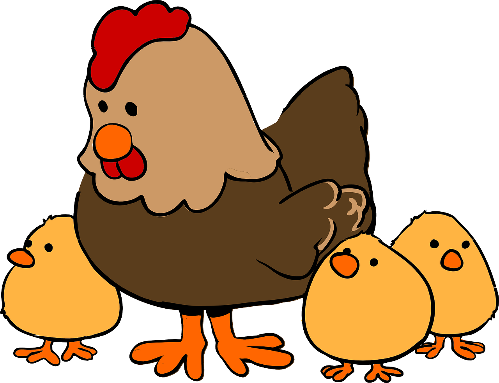

Na Temperatura Certa!
CASO QUEIRA INSTALAR NOSSO PROJETO EM SUA GRANJA ENTRE EM CONTATO:
tecchicken@gmail.com
Na Temperatura Certa!
CASO QUEIRA INSTALAR NOSSO PROJETO EM SUA GRANJA ENTRE EM CONTATO:
tecchicken@gmail.com
Um problema que vem causando prejuízos para os avicultores é a falta de controle de temperatura nas granjas. Essa falta de controle tem contribuido para morte de inúmeras galinhas, o que ocasiona na perda da carne da galinha e também dos ovos. Estima-se que essa perda resulte em torno de milhões de reais todos os anos, algo que poderia ser evitado utilizando a tecnologia da Tec Chicken.

© 2020 by Tec Chicken. Todos os direitos reservados.